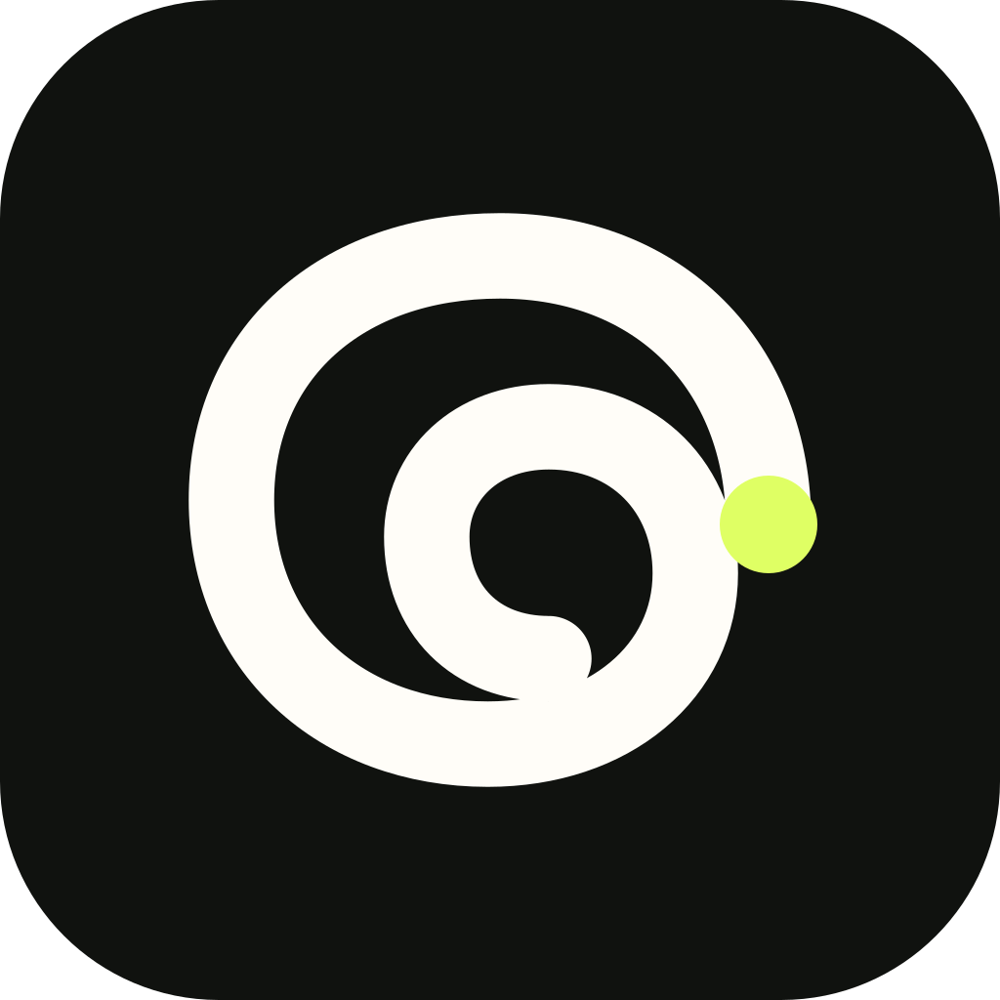
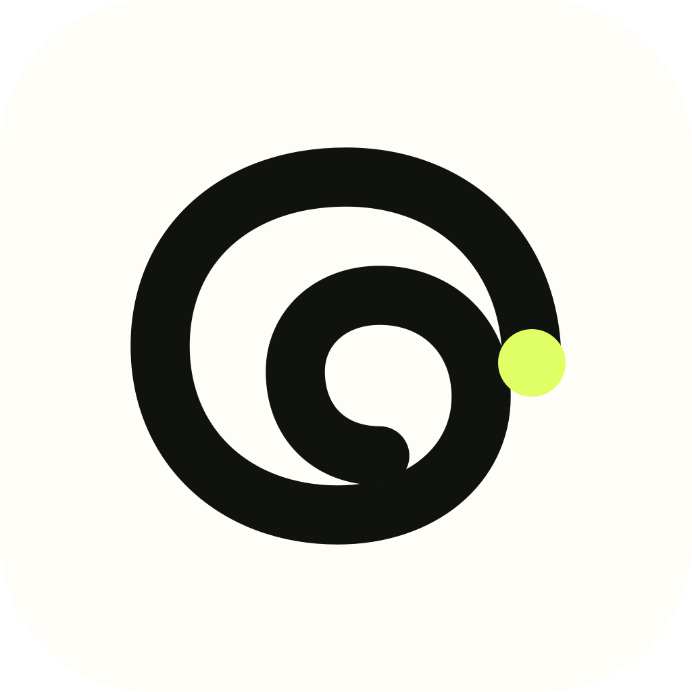

01 · aligned wordmark
CLAIRE LOGO EXPLORATION / 2026
From many,
one clear line.
Three native-vector territories move beyond the crowded speech-bubble category. Each begins in one color, uses simple geometry, and is tested before color or personality can hide a weak silhouette.
Working direction · Kept ThreadDESIGN LEAD’S PICK / 03
Kept Thread
A continuous conversation thread holds an implied C in its open inner curl. It is memorable without becoming a literal letter or another messaging bubble—and its terminal dot gives the system a flexible, useful accent.
Product truth 4/5Small-size clarity 4/5Ownability 5/5Durability 5/5
MOTION STUDIES / 01–04
A thread finds
its name.
Each lockup draws the same thread first. From there, it can settle into a wordmark, an AI identity, remain icon-only, or emit the letters of Claire in reverse sequence.
plays once · reduced-motion safe02 · claire.ai
03 · icon only
04 · e → r → i → a → l → c
THE FILTER
Simple enough to remember.
Monochrome first
If it cannot survive in ink, color will not save it.
One metaphor
No bubble, C, sparkle, and AI nodes competing for meaning.
Favicon honest
The useful test begins at 16px, not on a presentation board.
Real vectors
Few editable paths, no raster images, masks, or traced noise.
THREE TERRITORIES
Different ideas,
not cosmetic variants.
Resolve is product-led. Aperture is name-led. Kept Thread is behavior-led. The three share craft rules, not geometric DNA.
Resolve
Many channels become one readable stream. The outgoing line carries more visual confidence than any input.
- Ownable move
- Asymmetric three-to-one relay
- Failure mode
- Could feel infrastructural if over-sharpened
64 / 32 / 24 / 16Aperture
Two noisy planes part to reveal one crisp beam. It draws from the name Claire—clear, bright, legible.
- Ownable move
- Off-center negative-space beam
- Failure mode
- Most abstract without the wordmark
64 / 32 / 24 / 16original thread
 flipped / implied C
flipped / implied CKept Thread
The continuous thread stays intact. In the flipped study, its open inner curl carries the C as a discovered shape rather than a drawn letter.
- Ownable move
- Thread doubles as an implied C
- Inversion
- Mirrored curl shifts the C into the counter
64 / 32 / 24 / 16RECOMMENDED SYSTEM
Kept Thread, with a live terminal.
The thread remains quiet and recognizable. The terminal dot is the only color-changing part: lime is the default, while paper and ink variants give the mark clean contrast on every surface.
lime dotclairepaper dot
claireink dot

01 · PRIMARY
Ink launcher
Ink field, paper-white thread, lime terminal. Use for the default app icon.
02 · EXPRESSIVE
Lime launcher
Lime field, ink thread, paper-white terminal. Use in campaign or playful contexts.

03 · UTILITY
Paper launcher
Paper field, ink thread, lime terminal. Use for light-mode product surfaces.
SVG AI HANDOFF
Generate wide. Refine narrow.
The prompt pack creates each territory independently, then applies a focused cleanup prompt. Keep only results that survive the rejection checklist.
Open the SVG AI prompt pack →